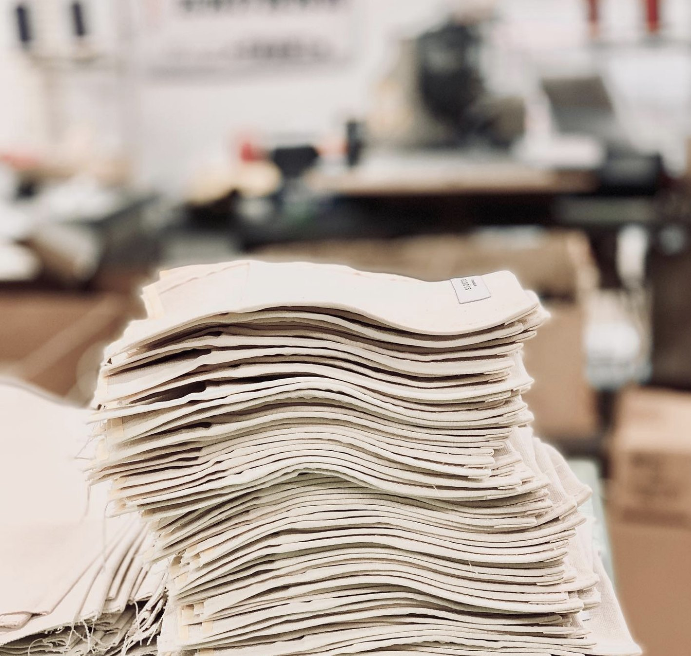
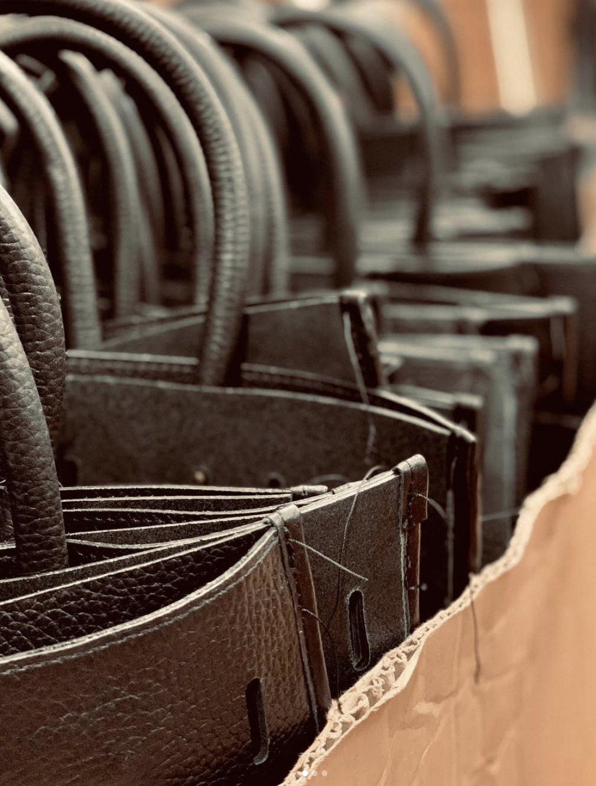
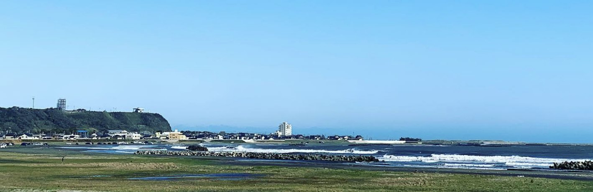

CONTACT PERSON
応募後に対応するのは、この人です
※ここはサンプルです。実際の採用担当者の写真・お名前・メッセージに差し替えます。
舘山（代表取締役）
採用担当
応募のご連絡は私が受けます。工房を見てから決めたい、という方には見学だけでも構いません。ものづくりが好きで、料理など自分で何かを作るのが好きな方だと、この仕事は楽しいと思います。まずは気軽にお電話ください。
両面テープでのパーツ仮止めなど、初期工程から始めます。ネームタグの縫い付け、決まった縫い代での本縫い、立体に組み上げる工程へと、段階を追ってステップアップ。焦らせません。

有名ブランドのバッグ類・小物のOEM製造が主な仕事。リュック、ショルダー、トート、革製品。最近は衣類やタオルなど、鞄以外の縫製にも挑戦しています。

工房は飯岡海岸の目の前。作業場は清潔に保ち、クルー全員が声をかけ合える人数です。マイカー通勤可・駐車場あり。転勤はありません。

※ここはサンプルです。実際には御社スタッフの1日の流れに差し替えます。
今日どの製品を何本仕上げるか、納期の近いものはどれかを全員で共有します。
裁断されたパーツを、縫う前の形に整えます。ここが揃うと後の工程がきれいに出ます。
座り仕事が続くので、体をほぐす時間をとります。肩と腰を伸ばして午前の後半へ。
お弁当を持ってくる人も、車で外に出る人も。海まで歩いて行ける立地です。
革の厚みや素材ごとにミシンを替えながら縫い進め、平らなパーツを立体に組み上げます。
設計どおりに縫えているか確認し、糸の始末を整えて梱包・出荷の準備をします。
ミシン周りを掃除し、明日の材料を出しておいて終業です。
※ここはサンプルです。実際に働く先輩からのメッセージ・写真に差し替えます。
ミシンは入社してから初めて触りました。最初の半年はテープ貼りと仮止めばかりでしたが、その丁寧さが縫い上がりに出ると後から分かりました。今は本縫いも任されています。
自分が縫ったバッグがお店に並んでいるのを見たときは、家族に自慢しました。分からないことは近くの人にすぐ聞ける人数なので、質問しやすい工房だと思います。
前職は接客業でした。ものづくりは未経験でしたが、覚えることを一つずつ渡してもらえたので続けられています。休憩でストレッチの時間があるのも助かっています。
子どもの学校に合わせた時間で働いています。細かい作業が好きな人には向いていると思います。通勤は車で、駐車場があるので雨の日も楽です。
※ここはサンプルです。実際には御社の「よくある質問」が入ります。
※ここはサンプルです。実際の採用担当者の写真・お名前・メッセージに差し替えます。
応募のご連絡は私が受けます。工房を見てから決めたい、という方には見学だけでも構いません。ものづくりが好きで、料理など自分で何かを作るのが好きな方だと、この仕事は楽しいと思います。まずは気軽にお電話ください。
※記載内容はハローワーク求人（求人番号 12030-02380661／12030-02477161）に基づきます。最新の条件はお問い合わせください。